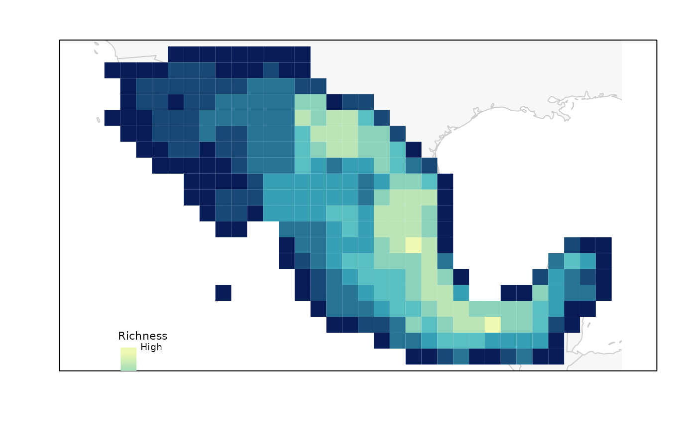

Plot of PAM indices in geography
plot_PAM_geo(PAM, index = "RI", master_selection = NULL, region_border = TRUE, mask_border = FALSE, selection_type = NULL, selection_number = 1, col_pal = NULL, border = NULL, col_sites = NULL, col_pre = NULL, pch_sites = 16, pch_pre = 16)
| PAM | object of class base_PAM. |
|---|---|
| index | (character) code for the index to be plotted. Options are: "RI" (Richness), "RIN" (Richness normalized), "DF" (Dispersion field), or "MCC" (Mean composition covariance). Default = "RI". |
| master_selection | master_selection object derived from functions
|
| region_border | (logical) whether to add region border to the plot. Default = TRUE. |
| mask_border | (logical) whether to add mask border to the plot. Ignored
if mask is not present in |
| selection_type | (character) Type of selection depending on the function
used to select sites. The options available are "random"
( |
| selection_number | (numeric) number of selection to be plotted. Default = 1. |
| col_pal | color palette function to be used in defining colors for the
|
| border | color for cell borders of the PAM grid. The default, NULL, does not plot any border. |
| col_sites | color for selected sites. The default, NULL, uses a red color to represent selected sites. |
| col_pre | color for preselected sites. The default, NULL, uses
a purple color to represent preselected sites. Ignored if preselected sites
are not present in |
| pch_sites | (numeric) integer specifying a symbol when plotting points of selected sites. Default = 16. |
| pch_pre | (numeric) integer specifying a symbol when plotting points
of preselected sites. Default = 16. Ignored if preselected sites are
not present in |
A plot of index represented in geography. Selected sites are added if
master_selection is defined.
# You can add a legend with legend_bar(position = "bottomleft", col = purplow(8), title = "Richness", labels = c("Low", "High"))